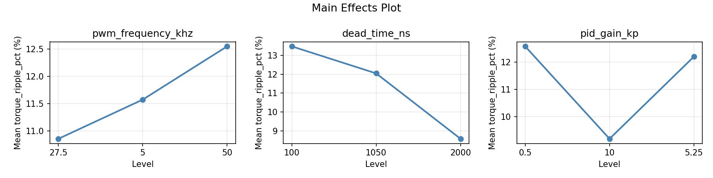
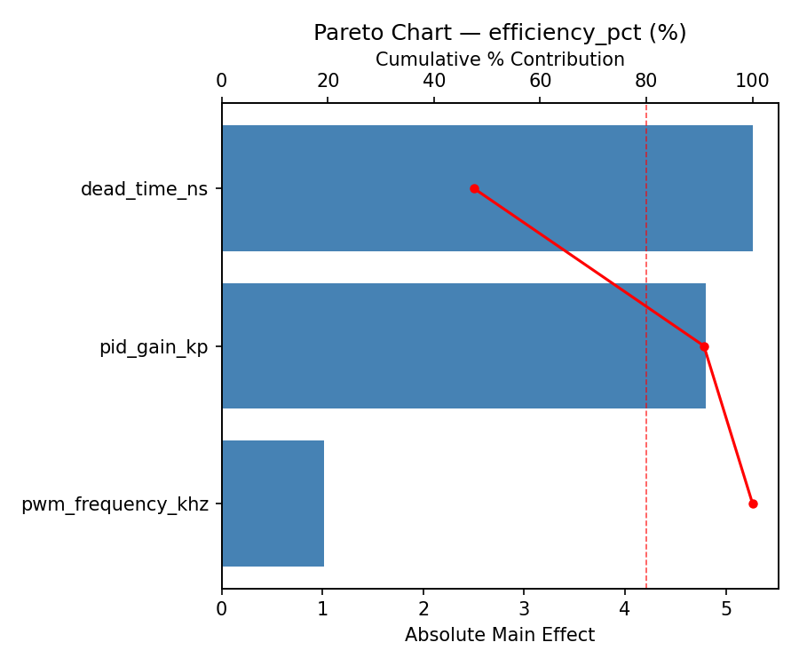
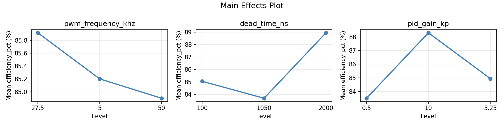
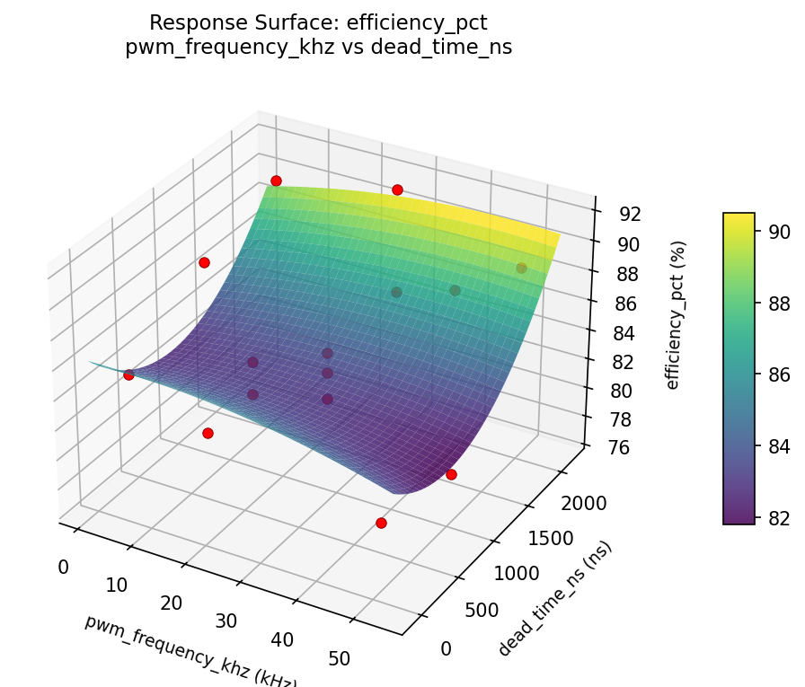
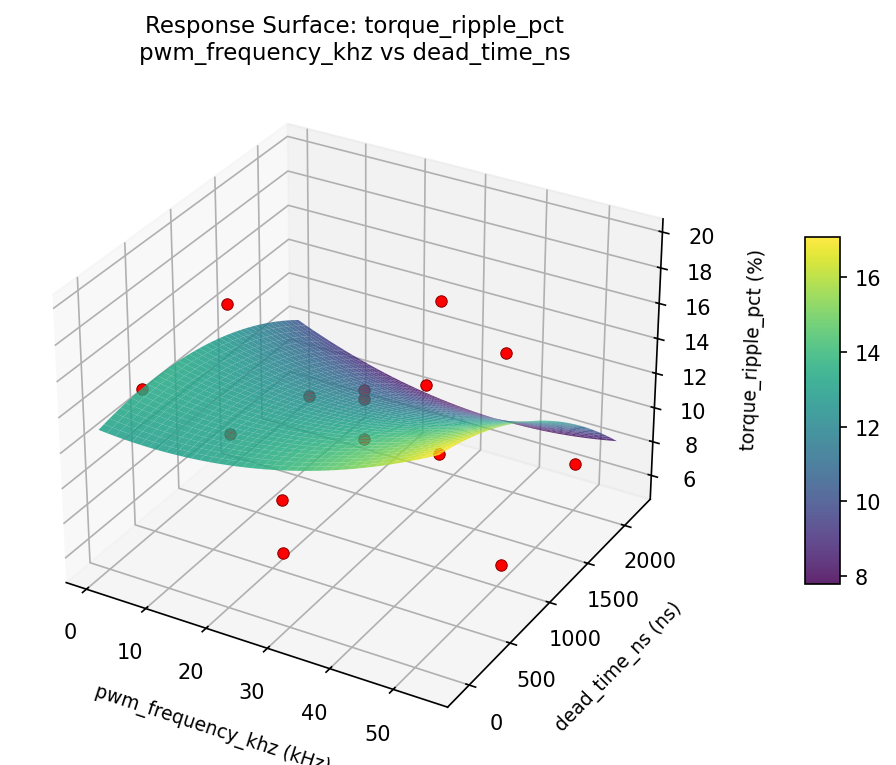

Summary
This experiment investigates pwm motor control. Box-Behnken design to tune PWM frequency, dead time, and PID gain for torque ripple and efficiency.
The design varies 3 factors: pwm frequency khz (kHz), ranging from 5 to 50, dead time ns (ns), ranging from 100 to 2000, and pid gain kp (gain), ranging from 0.5 to 10.0. The goal is to optimize 2 responses: torque ripple pct (%) (minimize) and efficiency pct (%) (maximize). Fixed conditions held constant across all runs include motor type = bldc, driver = drv8305.
A Box-Behnken design was chosen because it efficiently fits quadratic models with 3 continuous factors while avoiding extreme corner combinations — requiring only 15 runs instead of the 8 needed for a full factorial at two levels.
Quadratic response surface models were fitted to capture potential curvature and factor interactions. The RSM contour plots below visualize how pairs of factors jointly affect each response.
Key Findings
For torque ripple pct, the most influential factors were dead time ns (39.3%), pid gain kp (38.3%), pwm frequency khz (22.4%). The best observed value was 5.6 (at pwm frequency khz = 5, dead time ns = 2000, pid gain kp = 5.25).
For efficiency pct, the most influential factors were dead time ns (46.3%), pid gain kp (41.5%), pwm frequency khz (12.2%). The best observed value was 91.8 (at pwm frequency khz = 50, dead time ns = 2000, pid gain kp = 5.25).
Recommended Next Steps
- Run confirmation experiments at the predicted optimal settings to validate the model.
- Consider whether any fixed factors should be varied in a future study.
Experimental Setup
Factors
| Factor | Low | High | Unit |
|---|
pwm_frequency_khz | 5 | 50 | kHz |
dead_time_ns | 100 | 2000 | ns |
pid_gain_kp | 0.5 | 10.0 | gain |
Fixed: motor_type = bldc, driver = drv8305
Responses
| Response | Direction | Unit |
|---|
torque_ripple_pct | ↓ minimize | % |
efficiency_pct | ↑ maximize | % |
Configuration
{
"metadata": {
"name": "PWM Motor Control",
"description": "Box-Behnken design to tune PWM frequency, dead time, and PID gain for torque ripple and efficiency"
},
"factors": [
{
"name": "pwm_frequency_khz",
"levels": [
"5",
"50"
],
"type": "continuous",
"unit": "kHz"
},
{
"name": "dead_time_ns",
"levels": [
"100",
"2000"
],
"type": "continuous",
"unit": "ns"
},
{
"name": "pid_gain_kp",
"levels": [
"0.5",
"10.0"
],
"type": "continuous",
"unit": "gain"
}
],
"fixed_factors": {
"motor_type": "bldc",
"driver": "drv8305"
},
"responses": [
{
"name": "torque_ripple_pct",
"optimize": "minimize",
"unit": "%"
},
{
"name": "efficiency_pct",
"optimize": "maximize",
"unit": "%"
}
],
"settings": {
"operation": "box_behnken",
"test_script": "use_cases/73_pwm_motor_control/sim.sh"
}
}
Experimental Matrix
The Box-Behnken Design produces 15 runs. Each row is one experiment with specific factor settings.
| Run | pwm_frequency_khz | dead_time_ns | pid_gain_kp |
|---|
| 1 | 27.5 | 100 | 0.5 |
| 2 | 27.5 | 1050 | 5.25 |
| 3 | 50 | 1050 | 10 |
| 4 | 50 | 1050 | 0.5 |
| 5 | 27.5 | 1050 | 5.25 |
| 6 | 27.5 | 1050 | 5.25 |
| 7 | 5 | 1050 | 10 |
| 8 | 50 | 100 | 5.25 |
| 9 | 27.5 | 100 | 10 |
| 10 | 50 | 2000 | 5.25 |
| 11 | 5 | 1050 | 0.5 |
| 12 | 27.5 | 2000 | 10 |
| 13 | 5 | 100 | 5.25 |
| 14 | 5 | 2000 | 5.25 |
| 15 | 27.5 | 2000 | 0.5 |
Step-by-Step Workflow
1
Preview the design
$ python doe.py info --config use_cases/73_pwm_motor_control/config.json
2
Generate the runner script
$ python doe.py generate --config use_cases/73_pwm_motor_control/config.json \
--output use_cases/73_pwm_motor_control/results/run.sh --seed 42
3
Execute the experiments
$ bash use_cases/73_pwm_motor_control/results/run.sh
4
Analyze results
$ python doe.py analyze --config use_cases/73_pwm_motor_control/config.json
5
Get optimization recommendations
$ python doe.py optimize --config use_cases/73_pwm_motor_control/config.json
ℹ
Multi-Objective Optimization
This experiment has conflicting objectives (torque_ripple_pct (↓), efficiency_pct (↑)). Use --multi to find the best compromise using desirability functions:
$ python doe.py optimize --config use_cases/73_pwm_motor_control/config.json --multi
6
Generate the HTML report
$ python doe.py report --config use_cases/73_pwm_motor_control/config.json \
--output use_cases/73_pwm_motor_control/results/report.html
Features Exercised
| Feature | Value |
|---|
| Design type | box_behnken |
| Factor types | continuous (all 3) |
| Arg style | double-dash |
| Responses | 2 (torque_ripple_pct ↓, efficiency_pct ↑) |
| Total runs | 15 |
Analysis Results
Generated from actual experiment runs using the DOE Helper Tool.
Response: torque_ripple_pct
Top factors: dead_time_ns (39.3%), pid_gain_kp (38.3%), pwm_frequency_khz (22.4%).
Pareto Chart

Main Effects Plot

Response: efficiency_pct
Top factors: dead_time_ns (46.3%), pid_gain_kp (41.5%), pwm_frequency_khz (12.2%).
Pareto Chart

Main Effects Plot

Response Surface Plots
3D surfaces fitted with quadratic RSM. Red dots are observed data points.
efficiency pct dead time ns vs pid gain kp

efficiency pct pwm frequency khz vs dead time ns

efficiency pct pwm frequency khz vs pid gain kp

torque ripple pct dead time ns vs pid gain kp

torque ripple pct pwm frequency khz vs dead time ns

torque ripple pct pwm frequency khz vs pid gain kp

Full Analysis Output
=== Main Effects: torque_ripple_pct ===
Factor Effect Std Error % Contribution
--------------------------------------------------------------
dead_time_ns 2.1071 1.1600 39.3%
pid_gain_kp 2.0500 1.1600 38.3%
pwm_frequency_khz 1.2000 1.1600 22.4%
=== Summary Statistics: torque_ripple_pct ===
pwm_frequency_khz:
Level N Mean Std Min Max
------------------------------------------------------------
27.5 7 11.1857 4.7097 5.6000 19.7000
5 4 11.1750 5.1136 5.6000 16.0000
50 4 12.3750 4.7204 6.8000 17.6000
dead_time_ns:
Level N Mean Std Min Max
------------------------------------------------------------
100 4 10.0500 4.5618 5.6000 15.0000
1050 7 12.1571 3.6377 8.1000 17.6000
2000 4 11.8000 6.5559 5.6000 19.7000
pid_gain_kp:
Level N Mean Std Min Max
------------------------------------------------------------
0.5 4 12.7500 6.9419 5.6000 19.7000
10 4 11.6500 3.6738 7.3000 16.0000
5.25 7 10.7000 3.8009 5.6000 15.0000
=== Main Effects: efficiency_pct ===
Factor Effect Std Error % Contribution
--------------------------------------------------------------
dead_time_ns 3.8786 1.1711 46.3%
pid_gain_kp 3.4821 1.1711 41.5%
pwm_frequency_khz 1.0250 1.1711 12.2%
=== Summary Statistics: efficiency_pct ===
pwm_frequency_khz:
Level N Mean Std Min Max
------------------------------------------------------------
27.5 7 85.8000 4.0538 80.4000 91.3000
5 4 85.5250 6.4277 76.8000 91.8000
50 4 84.7750 4.5734 79.1000 90.3000
dead_time_ns:
Level N Mean Std Min Max
------------------------------------------------------------
100 4 87.5500 3.8310 83.5000 91.3000
1050 7 83.6714 4.5977 76.8000 88.6000
2000 4 86.4750 4.9379 80.4000 91.8000
pid_gain_kp:
Level N Mean Std Min Max
------------------------------------------------------------
0.5 4 84.8000 5.9738 79.1000 91.3000
10 4 83.4750 4.9889 76.8000 88.8000
5.25 7 86.9571 3.4899 81.7000 91.8000
Optimization Recommendations
=== Optimization: torque_ripple_pct ===
Direction: minimize
Best observed run: #3
pwm_frequency_khz = 5
dead_time_ns = 2000
pid_gain_kp = 5.25
Value: 5.6
RSM Model (linear, R² = 0.6934, Adj R² = 0.6098):
Coefficients:
intercept +11.5000
pwm_frequency_khz -1.0000
dead_time_ns -4.2250
pid_gain_kp -2.3750
RSM Model (quadratic, R² = 0.8369, Adj R² = 0.5433):
Coefficients:
intercept +11.5333
pwm_frequency_khz -1.0000
dead_time_ns -4.2250
pid_gain_kp -2.3750
pwm_frequency_khz*dead_time_ns +0.6750
pwm_frequency_khz*pid_gain_kp +1.0750
dead_time_ns*pid_gain_kp +1.8750
pwm_frequency_khz^2 -1.7542
dead_time_ns^2 +0.3458
pid_gain_kp^2 +1.3458
Curvature analysis:
pwm_frequency_khz coef=-1.7542 concave (has a maximum)
pid_gain_kp coef=+1.3458 convex (has a minimum)
dead_time_ns coef=+0.3458 convex (has a minimum)
Notable interactions:
dead_time_ns*pid_gain_kp coef=+1.8750 (synergistic)
pwm_frequency_khz*pid_gain_kp coef=+1.0750 (synergistic)
pwm_frequency_khz*dead_time_ns coef=+0.6750 (synergistic)
Predicted optimum (from linear model):
pwm_frequency_khz = 27.5
dead_time_ns = 100
pid_gain_kp = 0.5
Predicted value: 18.1000
Model quality: Moderate fit — use predictions directionally, not precisely.
Factor importance:
1. dead_time_ns (effect: 8.5, contribution: 52.6%)
2. pid_gain_kp (effect: 4.8, contribution: 29.5%)
3. pwm_frequency_khz (effect: 2.9, contribution: 17.9%)
=== Optimization: efficiency_pct ===
Direction: maximize
Best observed run: #9
pwm_frequency_khz = 50
dead_time_ns = 2000
pid_gain_kp = 5.25
Value: 91.8
RSM Model (linear, R² = 0.6453, Adj R² = 0.5485):
Coefficients:
intercept +85.4533
pwm_frequency_khz +1.4125
dead_time_ns +4.0625
pid_gain_kp +2.1750
RSM Model (quadratic, R² = 0.7513, Adj R² = 0.3035):
Coefficients:
intercept +86.6667
pwm_frequency_khz +1.4125
dead_time_ns +4.0625
pid_gain_kp +2.1750
pwm_frequency_khz*dead_time_ns -1.1000
pwm_frequency_khz*pid_gain_kp -0.7250
dead_time_ns*pid_gain_kp -2.0250
pwm_frequency_khz^2 -0.2333
dead_time_ns^2 -1.0333
pid_gain_kp^2 -1.0083
Curvature analysis:
dead_time_ns coef=-1.0333 concave (has a maximum)
pid_gain_kp coef=-1.0083 concave (has a maximum)
pwm_frequency_khz coef=-0.2333 concave (has a maximum)
Notable interactions:
dead_time_ns*pid_gain_kp coef=-2.0250 (antagonistic)
pwm_frequency_khz*dead_time_ns coef=-1.1000 (antagonistic)
pwm_frequency_khz*pid_gain_kp coef=-0.7250 (antagonistic)
Predicted optimum (from linear model):
pwm_frequency_khz = 27.5
dead_time_ns = 2000
pid_gain_kp = 10
Predicted value: 91.6908
Model quality: Moderate fit — use predictions directionally, not precisely.
Factor importance:
1. dead_time_ns (effect: 8.1, contribution: 53.1%)
2. pid_gain_kp (effect: 4.4, contribution: 28.4%)
3. pwm_frequency_khz (effect: 2.8, contribution: 18.5%)